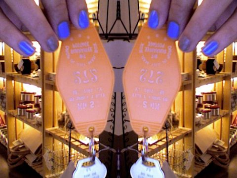
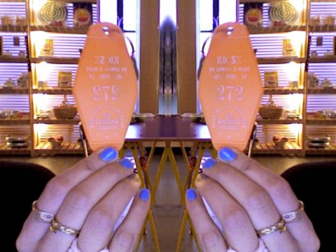
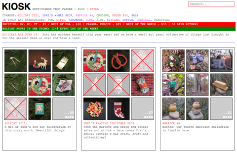

Now this little guy has a mortgage free home and can live virtually anywhere as long as there are empty lots and friendly neighbors next to which he can set up camp! Maybe we should all try to be this resourceful and mobile…
For more ideas on unconventional living check out this great book
Just read an article on a pretty tech-oriented website (and as such, you might fool yourself it doesn’t apply to you or me, but oh it does) listing some nice new-years resolutions. We are well into 2012 already, but make it into a new-month-resolution come February 1st instead! The section headers are below, but it’s good to read through the article. You *know* you just pretend you don’t need it!
Choose better problems to solve.
Stop stealing crap.
Stop trying to save bad work.
Stop being your own obstacle.
Blame yourself first.
Stay curious.
Learn to make mistakes faster.
Stop using your mom as an example of a stupid person.
Me, I did all of the above *last* year, so I’m close to perfect already, just have to stop smoking and be healthier this year.
Forthoseinterestedinmydailydetails: I’m on day three or four (first time quitting without counting!) of no breakfast puff, no smoke with the coffee, no cigarette because I need to get going, no cigarette to reward myself for getting going, no cigarette after lunch, no celebratory cigarette when I finished a task, no puff to calm down my nerves thinking of the tasks that are unfinished, no sad smoke after reading about some horrific politician, no smoke after sex, no bedchaser puff. No damn anything of that sort unfortunately! Also, I drank five glasses of water with lunch. I haven’t yet come to the point where I can do other things than purely focus on what I am not doing, but I hope that point will be passed before the next republican caucus. Tomorrow I am going to drink six glasses of that pure, healthy water. At least! So, how’s your promises not going eh?
What a way to start the new year! Luckily for this person, they had our Kiosk hotel key tag and the post office sent it back to us! If you can identify the number written on the back in sharpie, it’s yours!  
This is it, it’s the end of 2011 and what does that mean? It means a lot. Time for reflection, sighs, smiles and gags. Time to think back and think ahead to the new year. It’s also a time for giving. That’s right, DONATE. Every year at KIOSK we donate what we can to a number of organizations that are dear to us. This year we asked the KIOSK gang to come with suggestions and we donated to eight very worthy and great organizations. We urge you to do what you can and give to places you believe in and you want to support and if you can’t give money maybe you can give your time.
I am done with holiday shopping, I got everyone covered, they will all receive great gifts, and I know they will be very happy and eternally thankful to me. And it seems everyone else who is passing through here is done too — every single one! Done. Done with thinking, scheming, surfing, shopping and hopping from store to store to store. Done wrapping the gifts, done rhyming — my own Christmas rhymes are worthy of consideration for a literary prize if you ask me.
I and everyone out there have been incredibly organized this year — just like we should be! We planned ahead, no feet dragged. We responsible citizens of this modern world, have even already written up thank-you cards for the gifts we are going to receive from you. Thank you! Yes, thank you for your thoughtful, funny and heartwarming gifts! Not that we know what you are giving beforehand — only a few lucky ones possess the gift of foreseeing the future — but we know it’s good.
Soyou? I wouldn’t think this of you, but if you haven’t yet joined our club of effective planners, great seekers of the future, the upright congregate of self-respecting friends and family, there are still some great gifts out there. I have to say, I would be very happy receiving every one ofthese terrific itemsacheter cialis andorre. Except theblue watering can — I already have it! Come New Years Eve, I would trump my neighborsfireworks with a solemn, poetichot air balloon falling up as the ball on Times Square falls down. If I were a guest at a dinner, I would help wash up thecabbage dishes with this superiorDanish dish brush. Left-overs I’d tuck away neatly in ared-lidded container for the following day when my hosts really don’t want to cook. At the end, I’d leave somecedar incense behind to help them recover their senses,YES I would.
You may be late, but if you hurry up a little, the trustworthypostmen will have normal inexpensive priority packages delivered on time if you order beforeTuesday night(we need a few hours to pack). Later than that, you will have to select Reindeer Express shipping to have it there the next day. If you livenearby us, we will be here until 4 PM on Christmas eve. If you miss that too, you better have apen andpaper handy to write a very nice note and hope for forgiveness.
At times I feel so good about myself that I forget what I haven’t done, or what I regret. I should havesharpened my mind before talking to that cutie the other day. I came across as a fool! I should havecollected more recycling. I should have rolled up my sleeves and built ahouse ortwo.
…and I really, really regret lying in writing. I hope Santa is not getting this letter or I’m sure he will bring mecoal, only coal and masses of it, which I decidedly don’t want!
You get an UNKNOWN BUT FAMILIAR reduction of your bill at KIOSK just for mentioning this letter or typing in “Almost Done” when checking out online. “15” has somehow always sounded familiar to me.
Use the savings to treat someone to something, pass it on.
I am just testing out a new layout on the site — Grids with grids! Not grits, that’s what I wish I had for breakfast. Anyway take a look and tell me what you think in the comments. 